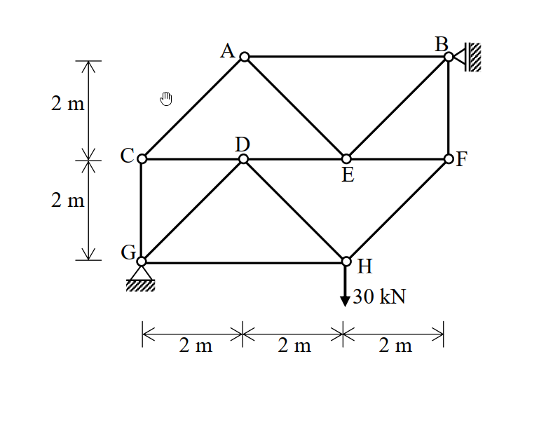

考題編號：SA-2010-1
主分類： SA-U1-1 靜定桁架分析
副分類： SA-U1-2 節點法與斷面法
分析法： 節點法 (Method of Joints) / 斷面法 (Method of Sections)
標籤： 零力桿件, 節點法, 斷面法, 靜定桁架
1. 原始題目重述 (Problem Restatement)
如圖所示之靜定桁架（truss）結構，包含節點 A 至 H。幾何尺寸為水平方向每格 $2\text{ m}$，垂直方向每格 $2\text{ m}$。在支承條件方面，支承點 B 為滾支承（roller），且其支承面為垂直牆面；而支承點 G 則為鉸支承（hinge）。當 H 點承受一垂直向下的集中載重 $P = 30\text{ kN}$ 時，請計算 AC、BF 與 DE 三根桿件之軸力。（20 分）
(註：本結構 G 點位於左下方，B 點位於右側垂直牆面，H 點位於下方承載外力。詳細幾何配置請參考原卷圖示。)

2. 考題核心精神與出題者意圖 (Core Concepts & Examiner's Intent)
本題的核心精神在於測驗考生處理靜定桁架分析的破局能力，具體而言，即「零力桿件（Zero-Force Members）判斷」與「選擇最適解題法（節點法 vs. 斷面法）」的綜合應用。
出題者刻意畫出看似複雜的多節點桁架結構，意圖嚇退考生或誘使考生從不恰當的節點開始解聯立方程式。然而，只要考生具備清晰的靜力學觀念，從邊界條件（支承反力）著手，並敏銳地找出零力桿件，即可迅速化繁為簡，如庖丁解牛般切入要害。此題為典型的「防守型」題目，只要不誤判反力方向並合理選用斷面法，即可穩拿滿分。
3. 解題戰略地圖與陷阱分析 (Strategic Roadmap & Trap Analysis)
解題戰略地圖：
- 全域平衡（Global Equilibrium）：將桁架視為一剛體，對 G 點取力矩平衡，求出 B 點的水平反力；接著利用水平與垂直力平衡求出 G 點反力。
- 零力桿件掃蕩（Zero-Force Member Identification）：從受力單純的節點（如 G 點、C 點、A 點）出發，透過節點法快速辨識出零力桿件（如 CG、AC、AB、AE），大幅簡化結構。
- 混合戰術求解（Mixed Method Application）：
- 桿件 AC：透過 C 點的節點平衡即可直接確認為零力桿。
- 桿件 BF：從簡化後的 B 點使用節點法直接求解。
- 桿件 DE：切一垂直斷面貫穿結構，取左半自由體對 H 點取力矩平衡，即可使用斷面法秒殺。
陷阱分析與應對策略：
- 💥 陷阱 1：支承反力方向誤判（致命陷阱）。B 點為滾支承，且滾軸靠在「垂直牆面」上。這意味著 B 點只能提供水平向的反力（$B_x$）。若依慣性將 B 點視為提供垂直反力，將導致全盤皆錯。應對： 仔細觀察滾支承的接觸面法線方向。
- 💥 陷阱 2：陷入盲目節點運算的泥沼。未先進行整體反力分析或不尋找零力桿件，直接從內部複雜節點列聯立方程式，不僅耗時極大且容易發生計算錯誤。應對： 謹記「先外力，後內力；先找零，再切斷」的桁架分析不二法門。
- 💥 陷阱 3：斷面法力矩中心的選擇。求解 DE 桿時，若使用斷面法但選錯力矩中心，會讓其他未知桿件的力也進入方程式。應對： 選擇使最多未知力通過的交點（H 點）作為力矩中心，即可單獨解出 $F_{DE}$。
3.5 變數層次分析 (Variable Hierarchy Analysis)
最終目標
運用整體平衡、節點法與斷面法，求出靜定桁架中 AC、BF 與 DE 三根桿件之軸力大小與拉壓性質。
本題關鍵公式（依計算順序）
Step 1：整體結構取力矩平衡求滾支承反力
$$ \sum M_G = 0 \implies B_x \cdot L_y - P \cdot L_x = 0 $$
Step 2：整體結構取水平/垂直力平衡求鉸支承反力
$$ \sum F_x = 0, \sum F_y = 0 \implies \boxed{G_x}, \boxed{G_y} $$
Step 3：使用節點法 (Method of Joints) 尋找零力桿與求出局部桿件力
$$ \sum F_x = 0, \sum F_y = 0 \text{ (應用於各節點)} $$
Step 4：使用斷面法 (Method of Sections) 建立包含目標桿件的力矩平衡
$$ \sum M_H = 0 \implies -\boxed{G_y} \cdot L_{G_y} - F_{DE} \cdot L_{DE} = 0 $$
L1：題目直接給定
| 符號 | 數值 | 說明 |
|---|---|---|
| $P$ | $30\text{ kN}$ | 作用於 H 點之垂直向下載重 |
| $\Delta x$ | $2\text{ m}$ | 結構水平向每格尺寸 |
| $\Delta y$ | $2\text{ m}$ | 結構垂直向每格尺寸 |
L2：需知識點推導
整體反力分析
| 符號 | 公式／來源 | 卡關? |
|---|---|---|
| $B_x$ | 滾支承於垂直牆面之反力，由 $\sum M_G = 0$ 求得 | |
| $G_x$ | 鉸支承之水平反力，由 $\sum F_x = 0$ 求得 | |
| $G_y$ | 鉸支承之垂直反力，由 $\sum F_y = 0$ 求得 | |
內力分析 (節點法與斷面法)
| 符號 | 公式／來源 | 卡關? |
|---|---|---|
| $F_{AC}$ | 觀察節點 C 之 $\sum F_y = 0$ (需先知 $F_{CG}$) | |
| $F_{BF}$ | 觀察節點 B 之 $\sum F_y = 0$ (需先解節點 A) | |
| $F_{DE}$ | 取垂直斷面切斷 D 點周邊，對 H 點取 $\sum M_H = 0$ | |
L3：深層知識（不懂就卡住）
| 知識點 | 說明 | 卡關? |
|---|---|---|
| 滾支承反力方向 | 滾支承的反力必垂直於接觸面，若接觸面為垂直牆，則反力為水平向。 | |
| 零力桿件判斷法則 | 若一節點僅有兩非共線桿件且無外力，則兩桿皆為零力桿；若有三桿件，其中兩根共線且無外力，則第三根為零力桿。 | |
| 斷面法力矩中心選擇 | 斷面法取力矩時，力矩中心可選在自由體外的任意點。選在未知內力作用線的交會點可大幅消去未知數。 |
4. 步驟化詳細計算過程 (Step-by-Step Detailed Calculation)
步驟 1：計算支承反力 (Global Equilibrium)
由圖可知，各節點座標為（設 G 為原點）：
- $G(0,0)$，鉸支承，有 $G_x, G_y$ 兩反力分量。
- $B(6,4)$，滾支承於垂直牆面，僅有水平反力 $B_x$。
- 外力：$H(4,0)$ 處有垂直向下之載重 $P = 30\text{ kN}$。
對全結構取 G 點力矩平衡（逆時針為正）：
$$ \sum M_G = 0 \implies B_x \times 4\text{ m} - 30\text{ kN} \times 4\text{ m} = 0 \implies B_x = 30\text{ kN} \text{ (向左, }\leftarrow\text{)} $$
水平力平衡：
$$ \sum F_x = 0 \implies G_x - B_x = 0 \implies G_x = 30\text{ kN} \text{ (向右, }\rightarrow\text{)} $$
垂直力平衡：
$$ \sum F_y = 0 \implies G_y - 30 = 0 \implies G_y = 30\text{ kN} \text{ (向上, }\uparrow\text{)} $$
步驟 2：計算桿件 AC 軸力 (節點法判斷零力桿)
分析節點 G：
G 點連接 CG (垂直) 與 DG (斜向，仰角 $45^\circ$) 兩桿件，並受反力 $G_x, G_y$。
$$ \sum F_x = 0 \implies G_x + F_{DG} \cos 45^\circ = 0 \implies 30 + F_{DG} \frac{1}{\sqrt{2}} = 0 \implies F_{DG} = -30\sqrt{2}\text{ kN} $$
$$ \sum F_y = 0 \implies G_y + F_{CG} + F_{DG} \sin 45^\circ = 0 \implies 30 + F_{CG} + (-30\sqrt{2})\frac{1}{\sqrt{2}} = 0 $$
$$ 30 + F_{CG} - 30 = 0 \implies F_{CG} = 0 $$
分析節點 C：
C 點連接 AC (斜向 $45^\circ$)、CD (水平) 與 CG (垂直)。
因無外力作用且 $F_{CG} = 0$，對 C 點取垂直向力平衡：
$$ \sum F_y = 0 \implies F_{AC} \sin 45^\circ - F_{CG} = 0 \implies F_{AC} \sin 45^\circ = 0 $$
故得：
$$ \boxed{F_{AC} = 0} $$
步驟 3：計算桿件 BF 軸力 (節點法)
首先，確認節點 A 的狀態：
分析節點 A：
因前步已求出 $F_{AC} = 0$，A 點僅剩 AB (水平) 與 AE (斜向，俯角 $45^\circ$)。節點 A 無外力。
$$ \sum F_y = 0 \implies -F_{AE} \sin 45^\circ = 0 \implies F_{AE} = 0 $$
$$ \sum F_x = 0 \implies F_{AB} + F_{AE} \cos 45^\circ = 0 \implies F_{AB} = 0 $$
(推論：桿件 AB 與 AE 亦為零力桿)
分析節點 B：
B 點連接 AB、BE (斜向，俯角 $45^\circ$) 與 BF (垂直)，且承受外加反力 $B_x = 30\text{ kN} (\leftarrow)$。
代入已知的 $F_{AB} = 0$：
$$ \sum F_x = 0 \implies -B_x - F_{AB} - F_{BE} \cos 45^\circ = 0 \implies -30 - 0 - F_{BE} \frac{1}{\sqrt{2}} = 0 \implies F_{BE} = -30\sqrt{2}\text{ kN} $$
$$ \sum F_y = 0 \implies -F_{BF} - F_{BE} \sin 45^\circ = 0 \implies F_{BF} = -(-30\sqrt{2})\frac{1}{\sqrt{2}} = 30\text{ kN} $$
故得：
$$ \boxed{F_{BF} = 30\text{ kN} \text{ (拉力, T)}} $$
步驟 4：計算桿件 DE 軸力 (斷面法)
切一垂直斷面，切斷 AB、AE、DE、DH、GH 五根桿件，取左半自由體 (包含節點 G, C, A, D)。
（註：GH 共線通過 H 點，對 H 點不產生力矩；且前述已求得 $F_{AB}=0, F_{AE}=0$）。
對 H 點取力矩平衡：
左半自由體受到的外力僅有 G 點反力 $G_x = 30, G_y = 30$。
斷面上的未知內力中，僅 $F_{DE}$ 對 H 點有力矩貢獻 ($F_{AB}, F_{AE}$ 皆為零，$F_{DH}, F_{GH}$ 作用線均通過 H 點)。
$$ \sum M_H = 0 \text{ (逆時針為正)} $$
$$ -G_y \times 4\text{ m} + G_x \times 0 - F_{DE} \times 2\text{ m} = 0 $$
$$ -30 \times 4 - 2 F_{DE} = 0 \implies -120 = 2 F_{DE} \implies F_{DE} = -60\text{ kN} $$
故得：
$$ \boxed{F_{DE} = 60\text{ kN} \text{ (壓力, C)}} $$
5. 關鍵爭議點與進階探討 (Critical Issues & Advanced Discussion)
- 圖示符號的解讀與機構陷阱：在部分古老的考卷中，支承的圖示可能較為潦草。若滾支承 B 的圖示沒有畫出明確的垂直牆面，考生可能會誤以為是放在某個橫樑上的垂直支承。考場應對：根據桁架的穩定性與受力合理性，若 B 也是垂直支承，則整體結構在水平方向無束制，將產生水平不穩定（幾何不穩定/機構）。因此，合理推斷並假設 B 為承受牆面水平推力的滾支承，是最符合靜定結構邏輯的唯一解讀。
- 解題方法的靈活切換：本題完美示範了「節點法」與「斷面法」在實戰中不可偏廢。對於靠近支承或邊界、幾何關係單純的桿件（如 AC、BF），節點法最為直觀且能快速剝除冗餘桿件；而對於深入結構內部、周邊桿件繁多的桿件（如 DE），若純用節點法需層層遞進計算多個節點，極易累積計算錯誤，此時「一刀切開取力矩」的斷面法就是最佳武器。
- 進階觀念 - 零力桿的物理意義與實務價值：雖然零力桿（如本題中的 AC、AB、AE、CG）在給定的單一載重（30kN）下不受力，但在實務工程中，這些桿件不能被隨意拆除。它們提供了結構的挫曲束制（bracing against buckling）、承受可能改變位置或方向的活載重（Live Loads）、抵抗側向風力或地震力，並且增加了整體結構的靜不定度與冗餘度（Redundancy），防止單一桿件破壞引發連續倒塌。